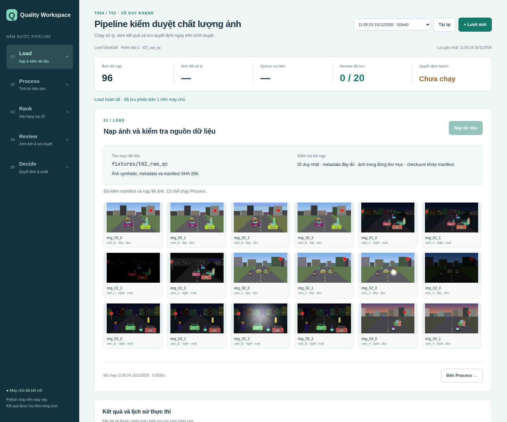
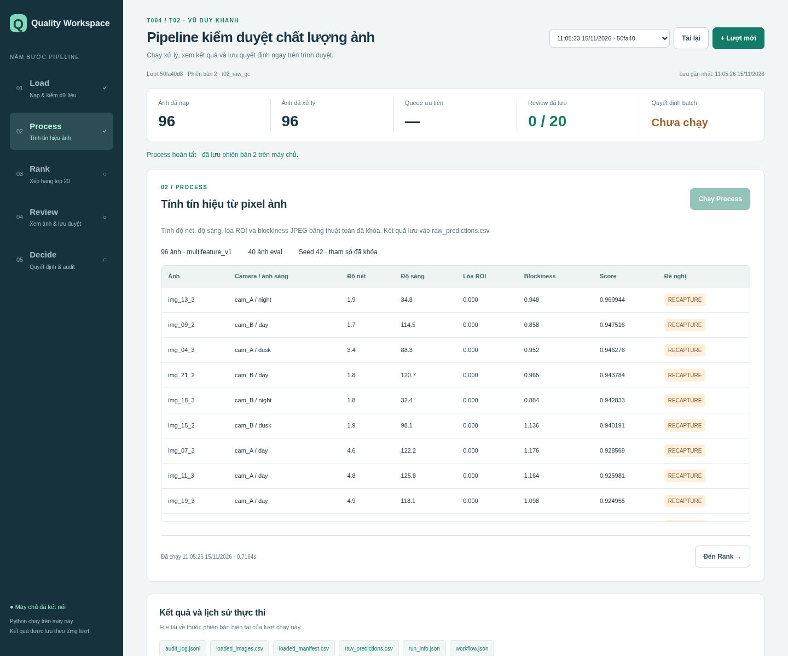
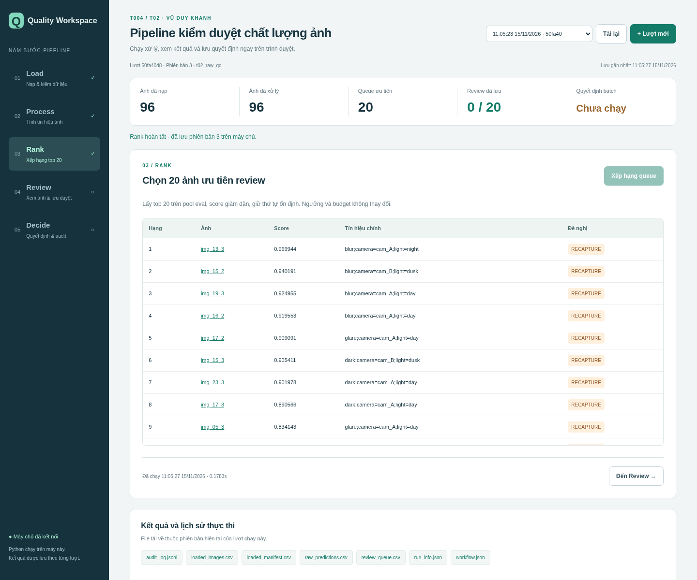
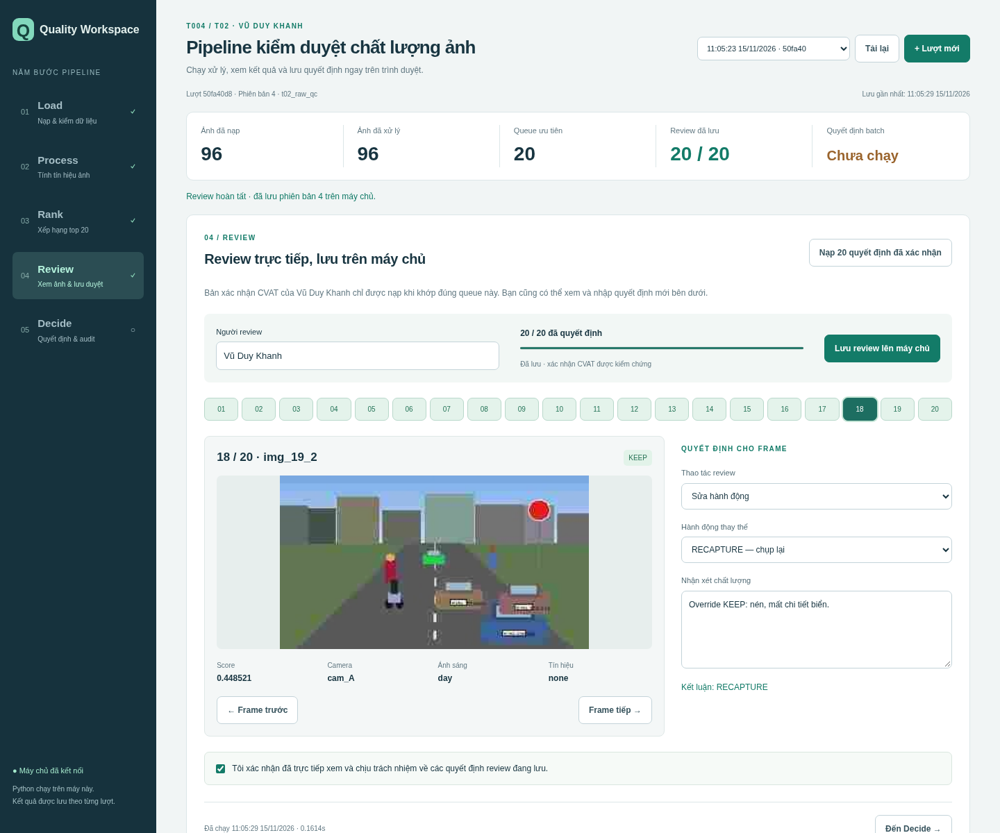
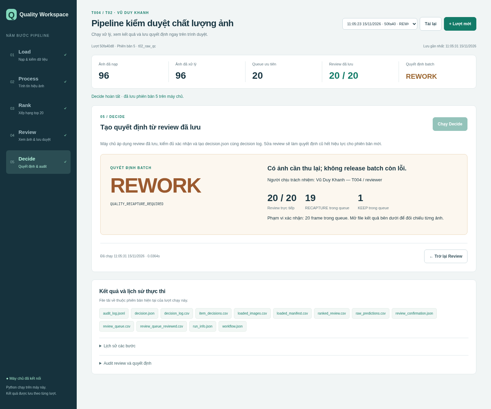

Vũ Duy Khanh · T004 / T02
Chạy make web, mở http://127.0.0.1:8765 để thao tác.
Đây là gallery ảnh chụp lần chạy qua HTTP. Kết quả và audit bên dưới được tải từ máy chủ.
Lượt 50fa40d8de1e438ab884a30802e58b7f · phiên bản 5 · kiểm tra 2026-11-15T04:05:31.724Z · Chromium 155.0.8059.84
Đọc 96 ảnh, metadata và kiểm manifest SHA-256.

Tính nét, sáng, lóa ROI, blockiness và điểm QC từ pixel.

Chọn 20 ảnh ưu tiên từ 40 ảnh eval theo điểm đã khóa.

Mở đủ 20 frame, lưu review và nhập xác nhận CVAT khớp queue.

20 review trực tiếp, 19 RECAPTURE, 1 KEEP. Batch REWORK.
